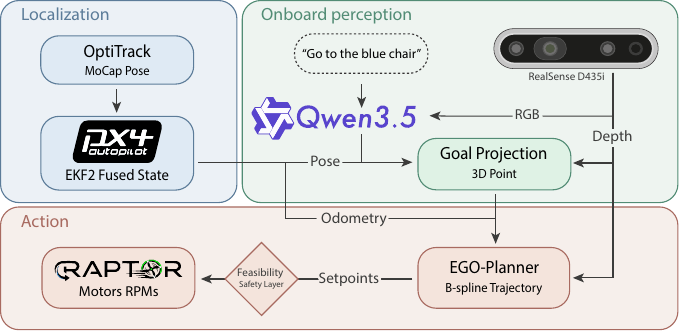
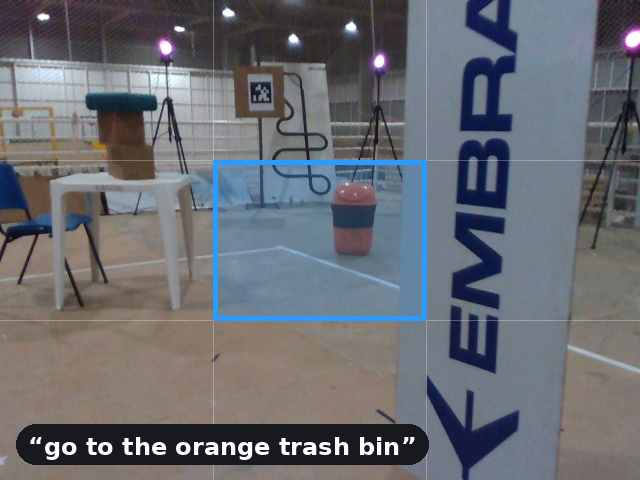
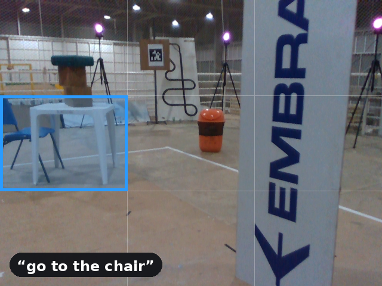
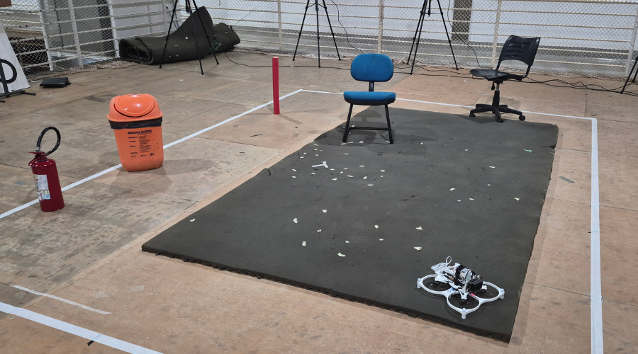
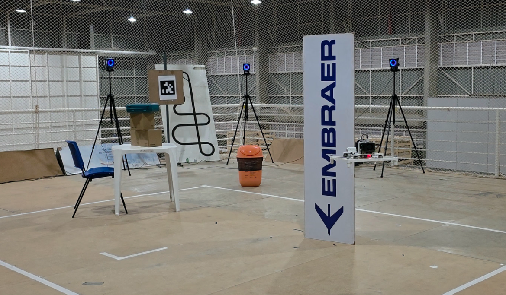

Overview
VLN on the Fly allows a drone to navigate toward an object named in a language instruction, such as “go to the trash bin.” It uses camera images to locate the object, estimates its position from depth measurements, and plans and follows a path toward it. The navigation and control computations run onboard. We evaluated the system in indoor flight experiments with and without obstacles, using an external motion-capture system for position and orientation estimates.
Flight demonstration
How it works
The system separates finding the object, planning a path, and controlling the drone.

- Find the object. A quantized Qwen-3.5-2B vision-language model selects one of nine image regions. Depth measurements from that region give an estimated 3D goal.
- Plan a path. EGO-Planner builds a local map from depth measurements and produces a smooth path that accounts for obstacles.
- Follow the path. The pretrained RAPTOR policy converts the planned position setpoints into motor commands. It runs on the flight controller, without retraining for our airframe.
The vision-language model and planner run on a Jetson Orin NX. Keeping the stages separate lets us inspect the selected object region, estimated goal, and planned path when a flight does not reach its target.
Finding the requested object
The model selects an image region for the named object instead of predicting an exact pixel.


Drag the divider or use the left and right arrow keys. The camera image is the same; changing the requested object changes the selected region.
Flights around obstacles
We also tested the same system with obstacles between the take-off position and the requested object.
Experimental setup
Flights took place in a controlled indoor space, using a RealSense D435i depth camera and OptiTrack motion capture for position and orientation estimates.


Checks before flight
A goal is accepted only after three consecutive predictions select the same image region above the confidence threshold. The goal must also have valid depth and lie within the configured operating bounds. The planner checks the path against its local obstacle map before execution. When no goal passes the checks, the drone holds position and waits for a valid goal.
Limitations
These checks are not a general safety guarantee. Our evaluation used a single indoor motion-capture space and constrained flight altitude. The model sees only the current camera image, so it cannot locate an object outside the field of view and can mistake another object for an absent target. Limited depth range and invalid measurements can also affect the goal estimate. The paper describes the observed failures and experimental limits.
IMAV 2026 presentation
We presented this work at IMAV 2026. Our talk begins at 1:35:35 in the conference recording.
Citation
@inproceedings{tayar2026vlnonthefly,
title = {VLN on the Fly: An Onboard Vision-Language Navigation Stack for Aerial Robots},
author = {Tayar, Marco S. and Tommaselli, Felipe and Capezutto, Gianluca and
Saraiva, Pedro Antonio Rabelo and de Freitas, Pedro H. V. and Kido, Lucas and
Sonego, Guilherme and Godoy, Ricardo V. and Becker, Marcelo},
booktitle = {International Micro Air Vehicle Conference (IMAV)},
year = {2026}
}
Acknowledgments
Supported in part by the São Paulo Research Foundation (FAPESP), grants #2025/20858-7 and #2025/22381-3; the Conselho Nacional de Desenvolvimento Científico e Tecnológico (CNPq), grant 308092/2020-1; and Petrobras, using resources from the R&D clause of the ANP, in partnership with the University of São Paulo and FAFQ.